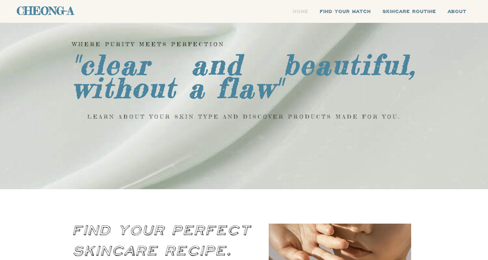

Ediya Coffee:
Sanrio collaboration campaign

Experience: On-site cafe operations, customer interactions & promotional
support
Insight: Identified opportunities to create stronger Gen Z engagement through
limited-edition collaborations
Strategy: Connected Ediya's retail experience with social and experiential
touchpoints
Ideation: Proposed 3 campaign activations (Pov reels, 3D Photo Zone, O2O)
View Project →
Suwon Messe:
Children's exhibition

Focus: Experiential Marketing & Live Audience Engagement (35K-55K
visitors)
Role: Managed interactive event zones featuring the popular "Butt Detective" IP
and supported visitor engagement
Experience: Assisted with high-traffic interactive booths and visitor flow
Key Takeaway: Gained firsthand experience navigating high-traffic event
environments and responding to on-site situations.
Oreo Campaign

Target: Gen Z Consumers
Social Execution: Instagram Carousel Ads & Hashtag Challenge Key
(#TwistLickDunkChallenge)
Objective: Increase Oreo's market share from 8.5% to 9%
Expected Reach: 159.4M total impressions across digital media
Oreo Campaign →
Social Media Audit:
Last Frontier Coffee

Target: Local Cafe & Competitive Market
Analysis: Instagram vs. Facebook Performance & Conversion Friction
Key Discovery: Reels Engagement Rate (14.38%) is 6x Higher than Static Posts
Strategy: Designed trackable UTM links and targeted Instagram mockups
View Project →
Country Journals

Focus: International Marketing & Global Campaign Strategy
Concept: Analyzed advertising campaigns across 9 countries to examine cultural
nuances
Strategy: Evaluated target audiences and creative executions for localized
markets
Key Takeaway: Developed an understanding of how brands adapt messaging for
global audiences
Journals →
Cheong-A Skincare Website

Focus: Brand Identity Design & User-Centric Visual
Concept: Developed a skincare brand website centered around the concept of
“clear and pure”
Strategy: Organized skincare information into an intuitive, user-friendly
layout
Key Takeaway:
Explored how visual identity and user experience can communicate a brand’s value
Cheong-A →
Neuroscience & Me

Focus: Consumer Psychology & Behavioral Marketing
Concept: Explored the relationship between neuroscience, mental health, and
consumer behavior
Research: Conducted evidence-based research on how brain functions can
influence emotions and decision-making
Key Takeaway: Developed an understanding of how psychological and emotional
factors can influence consumer behavior
View Project →
E-Book Design

Focus: Digital Editorial Layout & Mobile-Friendly Visual
Concept: Authored an original, typographically optimized E-book interface for
digital readers
Execution: Engineered cohesive illustrative styling and seamless digital-first
narrative design
Feature: Optimized asset scalability and layouts across various smart screens
Follow Magical World →
Content Curation:
Seoul Web Guide

Focus: Targeted Marketing & Lifestyle Curation
Concept: Developed an interactive single-page web guide featuring curated
Seoul attractions
Strategy: Formulated user-centric rating systems and authentic "Local Pick"
recommendations Feature: Turned local spot info into easy and fun web content
for users
Peek Inside Local Picks →
Content Curation:
Seattle Web Guide

Focus: Targeted Marketing & Cafe Curation
Concept: Developed an interactive single-page web guide showcasing Seattle's
best cafe spots Strategy: Formulated a user-centric digital layout combining
visual storytelling with curation Feature: Built a highly trusted web guide
based on my actual visits to each spot
5 Best Cafes →